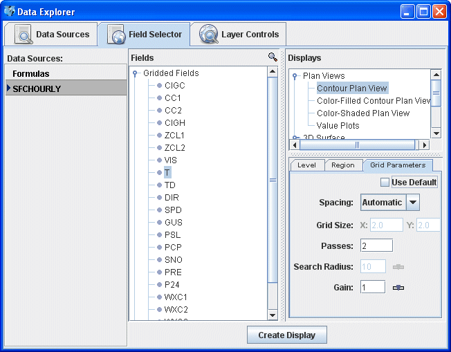

Gridded Point Data
Overview
McIDAS-V can create gridded fields of numeric data using
the Barnes Objective Analysis. You can control the parameters
used to create the grid from the Data Source Properties or
using the Grid Parameters tab in the Data Subset panel
of the Field Selector. Note that since this gridded display will utilize point observation data, the display over areas with few observations (ex. open ocean) may not correctly represent the actual data over that region. Also note that with certain point netCDF files where each data point has a different time, time binning must be applied to the data source before the display is created to group multiple times of data into the same timestep for gridded displays to be created. To get more exact gridded displays of point data, it is best to utilize the Region tab to subset an area of interest with a relatively high density of point observations:

Image 1: Gridded Point Data in the Field Selector
The resulting grid can be displayed using any of the
Gridded Data Displays.
Properties
- Use Default - Uses the default, native values for the selected field.
- Spacing - Determines the grid spacing method.
- Automatic - Calculates grid spacing from the observation density.
- Degrees - Uses a specific lat/lon spacing for the grid spacing.
- # Points - Sets the number of grid points in the x and y direction.
- Grid Size - Specifies the grid spacing if not using automatic calculation.
- Passes - Sets the number of passes for the Barnes analysis to do.
Four passes are recommended for analyzing fields where derivative
estimates are important (Ref: Barnes 1994b), three passes
recommended for all other fields (with gain set to
1.0) (Ref: Barnes 1994c "Two pass Barnes Objective
Analysis schemes now in use probably should be
replaced by appropriately tuned 3pass or 4pass
schemes"), and two passes are only recommended for "quick look"
type analyses.
- Search Radius - Sets the search radius (in grid units) for the weighting of points in
determining the value at a specific grid point. This option is available with the Degrees and # Points spacing options. This should be in the range
0.2 to 1.0. Data are fitted more closely with a gain of 0.2
(at the expense of less overall accuracy over the entire grid), larger
values smooth more.
- Gain - Represents the factor by which scaleLength is reduced for the second
pass. This should be in the range 0.2 to 1.0. Data are
fitted more closely with a gain of 0.2 (at the expense
of less overall accuracy over the entire grid), larger
values smooth more. Suggested default: 1.0.
Set the gain for each pass after the first.
- First Guess Field - Uses a model grid as a first guess field for the analysis. Select the "Grid Parameters (with first guess)" field and you will be prompted to select the gridded field to use for the first guess.
- References -
- Barnes, S.L., 1994a: Applications of the Barnes objective analysis scheme
Part I: Effects of undersampling, wave position, and station randomness. J.
Atmos. Oceanic Technol. 11, 1433-1448.
- Barnes, S.L., 1994b: Applications of the Barnes objective analysis scheme
Part II: Improving derivative estimates. J. Atmos. Oceanic Technol. 11,
1449-1458.
- Barnes, S.L., 1994c: Applications of the Barnes objective analysis scheme
Part III: Tuning for minimum error. J. Atmos. Oceanic Technol. 11, 1459-1479.